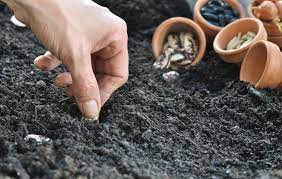
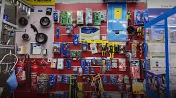

Trading
Buy Seeds
Find high-quality seeds, fertilizers, and agricultural inputs to enhance your crop production and achieve better yields.
Sell Produce
Connect with potential buyers and sell your farm produce to maximize profits and expand your customer base.

Equipment Trading
Explore a range of agricultural machinery and equipment to improve efficiency and optimize your farming operations.
